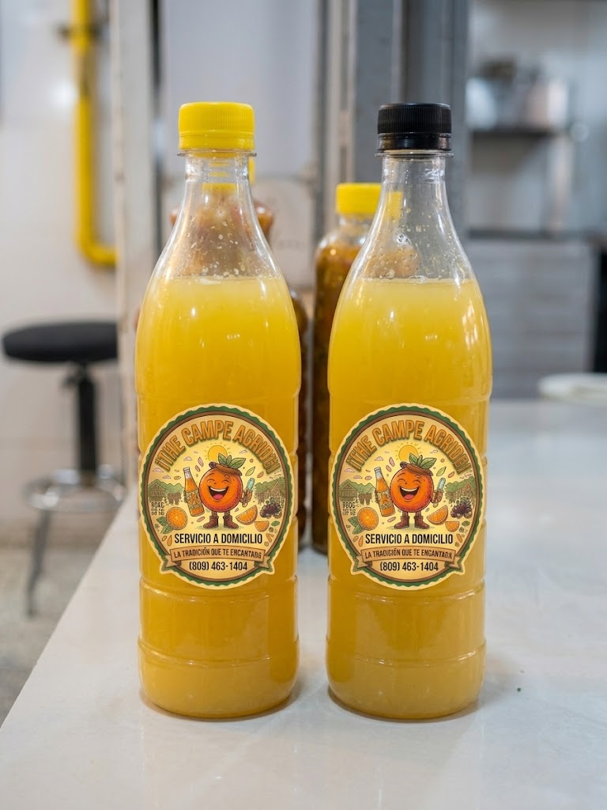
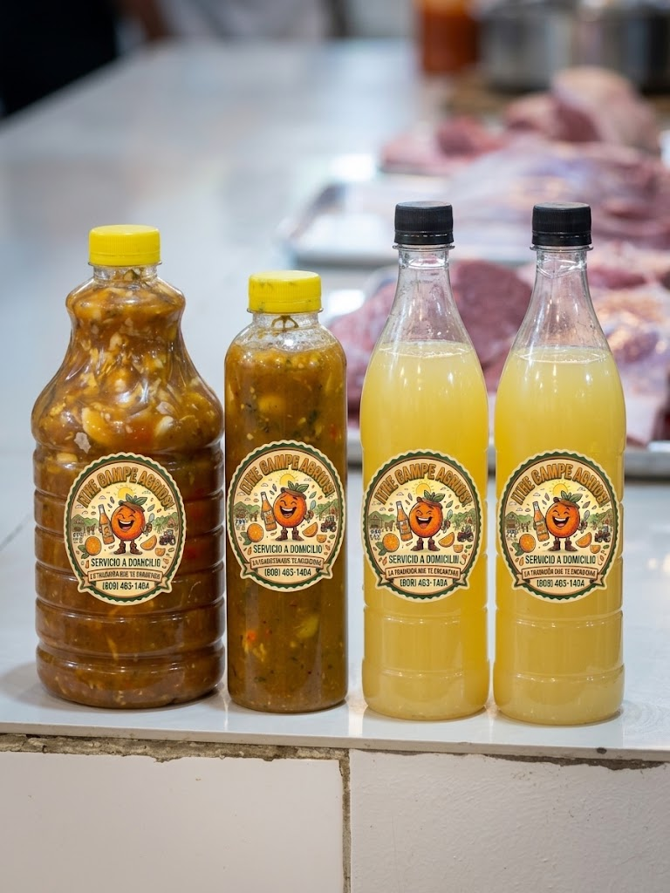
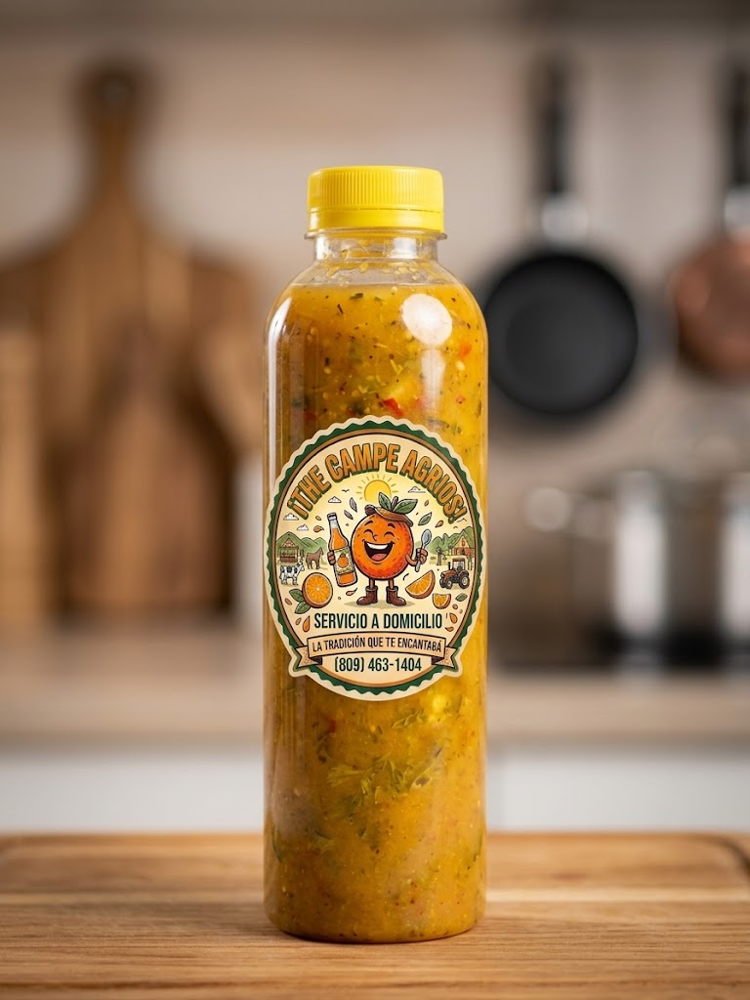
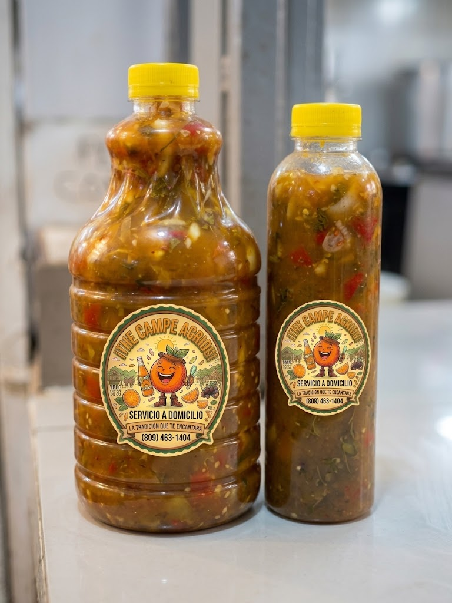
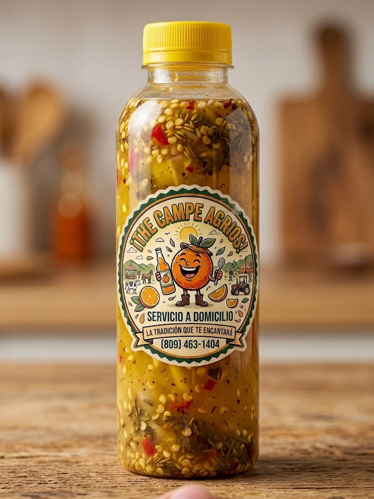
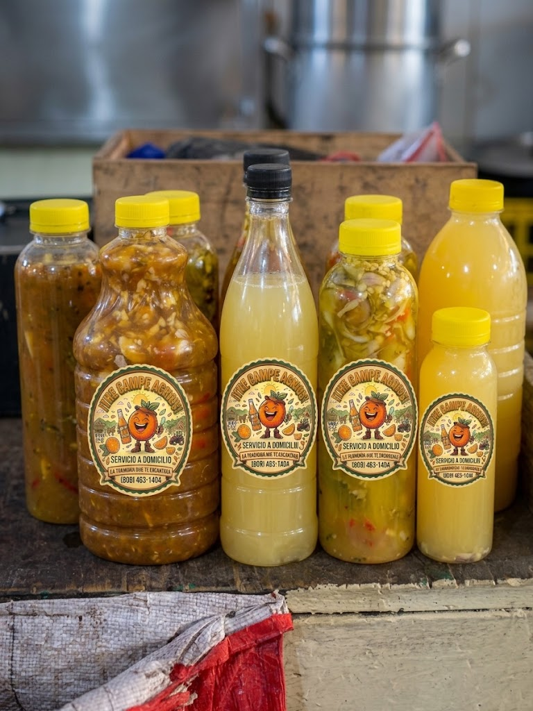

Agrio Criollo

Agrio Criollo Clásico (750ml / 1L)
Puro jugo de naranja agria seleccionado en el campo, con ese toque exacto de acidez que corta la grasa y realza el sabor de sopas, chicharrones, pescados y ensaladas.
Disfruta del auténtico Agrio de Naranja Criollo recién exprimido (color amarillo claro) y la inconfundible Wasacaca Casera (color sazón oscuro) preparada con hierbas, ajo fresco y especias secretas para sazonar y acompañar tus mejores carnes y pescados.

Preparados frescos todos los días. Elige el tuyo en presentaciones personal, mediana o familiar.

Puro jugo de naranja agria seleccionado en el campo, con ese toque exacto de acidez que corta la grasa y realza el sabor de sopas, chicharrones, pescados y ensaladas.

Mezcla secreta macerada con ajo criollo triturado, cilantro fresco, ají gustoso, orégano campesino y base ácida. El compañero ideal para asados y frituras.

Para los domingos de barbacoa, restaurantes, picaderas y familias apasionadas por el sabor. Botella ancha de máxima duración y rendimiento.

Cargada con semillas de ajíes seleccionados, pimientos finamente picados y orégano entero. Un toque vibrante que despierta cada bocado.

Lleva lo mejor de los dos mundos: la acidez cristalina del Agrio Amarillo Claro y la potencia sazonadora de la Wasacaca Oscura. ¡El combo perfecto!
Ideal para llevar a la oficina, viajes o para una comida rápida. El toque exacto de agrio criollo en un envase cómodo y hermético.
En The Campe Agrios cuidamos cada detalle del embotellado y la fórmula casera. Desde el colado de las naranjas agrias maduras hasta el macerado pausado de nuestras wasacacas criollas.
Fácil de identificar por su color y diseñado para combinaciones espectaculares
Elaborados exclusivamente con jugo cítrico criollo. Tienen una tonalidad amarillo claro brillante.
Salsa tradicional sazonada de color oscuro por la combinación de ajo horneado/molido, orégano, cilantro y especies campesinas.
Hacemos envíos rápidos a domicilio. Déjanos saber cuántas botellas necesitas y te las llevamos de inmediato.